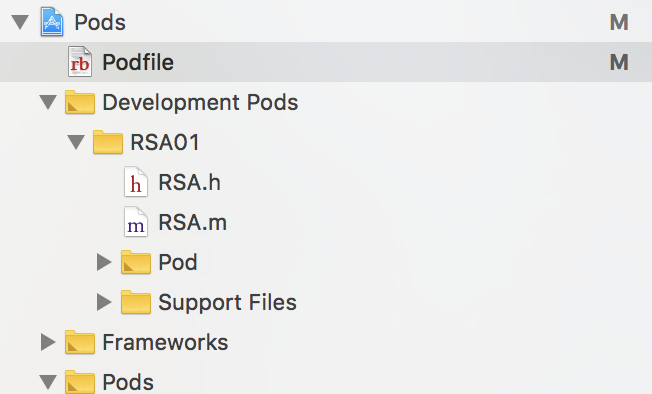
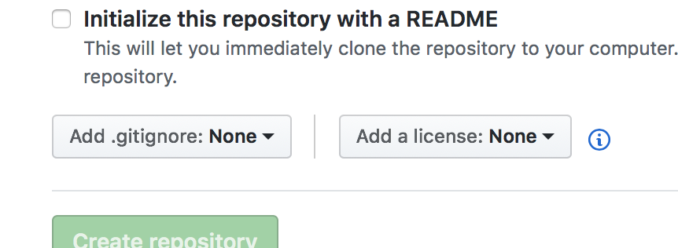

打包组件到cocoapods
我们在iOS开发中，相信所有小伙伴都经常使用到cocoapods，使用别人上传的组件用在我们自己的项目中，这会大大节省我们开发的时间，比如AFNetworking、Masonry等等，但是你们有没有想过把自己写的一些好用的组件也放到cocoapods中，让别的小伙伴使用啊，废话不多说，我们直接看流程：
其实cocoapods也是使用github来进行代码管理的，所以我们也要传一份我们的代码到github上。
一、在github创建一个项目
首先我们需要有一个github账号，账号创建我就不说了，相信大家都会，接下来我们就创建我们的项目，首先我们需要填写我们的项目名称Repository name，然后选择license，gitignore，license是必选的，这个我后面后说，然后点击create repository按钮创建。这样我们的项目就创建好了，但是这还是一个空项目，所以我们要把它clone到我们本地，然后把我们的组件拷贝进去上传到github，代码上传我就不说了，就那一套命令。上传完成后我们要打tag，这个tag必须得打的，这个和我们后面配置spec的version是对应的。
git tag -a v1.0.0
git push origin v1.0.0
可以使用git show tag查看我们的打的tag
这就完成我们的第一步了，接下来我们上传cocoapods
二、上传cocoapods
1、命令行cd到我们刚拉下来的工程根目录下，初始化一个Podspec文件，这个文件最好与项目名相同
pod spec create 项目名
2、打开我们创建的spec，配置spec文件，tag一定对应github tag，配置的时候有自动生成的一些，比如spec.name、spec.version等，
Spec.homepage是我们必须填的，它对应我们的github项目地址
Spec.license也是必须填的，比如 spec.license = { :type => “MIT”, :file => “LICENSE” }
spec.author就填我们刚创建的就行，比如 spec.author = { “作者” => “邮箱” }
Spec.source也是必须填的，对应我们的组件git地址对应的tag号
Spec.source_files也需要填，对应我们组件都包括什么类型的文件，比如.h，.m文件
其他的可以选填了
3、配置完成后，创建pods账号，当然有账号的就不用创建了，创建账号的命令为：
pod trunk register 邮箱 联系人 --description="描述" --verbose
然后会发一封邮件到你邮箱进行验证
pod trunk me 可以查看trunk信息
4、接下来我们要上传我们的组件
先使用 pod spec lint 项目名.podspec 验证是否通过，如果不通过要修改配置文件
5、上传组件
pod trunk push
在2014年的时候，cocoapods推出了trunk，以后trunk是提交到pod的唯一的方法，不接受对cocoapods specs repo的pull请求。所以在2014年之前，可以在cocoapods的github上把我们刚刚创建的spec文件上传到他们的github上，但是出了trunk后，我们省事了很多，直接上传就好了。
那我们怎么pod我们本地的组件到我们的项目中：
同样在打包到项目之前也需要在本地创建好库名称，以及创建podspec配置文件，完成后需要在本地init个git文件，然后提交到git，完成后就可以pod到项目中了，需要注意的是在podfile文件中需要写明该库所在的具体地址，例如：pod ‘RSA01’, :path=> ‘/Users/zhangzhifang/RSA01’ ，执行pod install
引入成功后在pods项目中会多一个Development pods文件，本地pod库放在该文件夹下

到这里我们基本上就算完成了，接下来说一下我打包时遇到的坑
注意⚠️：
1、在创建git项目的时候，必须要选择license,gitignore，一般情况下选择MIT License，因为MIT是软件授权条款（源自麻省理工学院），选择它就认为你授权了你上传的项目对外开源，被授权人有权利使用、复制、修改、合并、出版发行、散布、再授权及贩售软件及软件的副本。不选择license,上传的时候会提示找不到license，到时候验证失败无法上传。当然也可以不选择MIT，选择别的授权条款，如果选择别的，在.podspec文件中配置spec.license的时候需要修改一下type值

2、如果出现xcrun: error: unable to find utility “simctl”, not a developer tool or in PATH
错误，去xcode->preference->location下选择commons line tools
3、在验证的时候出现warning的时候，最好解决一下，否则上传的时候有可能会失败（虽然可以使用pod lib lint –allow-warnings忽略警告）
4、如果在pods中搜索不到要找的框架，前往文件夹（快捷键shift + command + G）~/Library/Caches/CocoaPods/ 中删除search_index.json文件，然后重新搜索就可以了
在上传完成以后在cocoapods官网https://cocoapods.org暂时是搜不到你的项目的，不用着急，第二天会搜到。